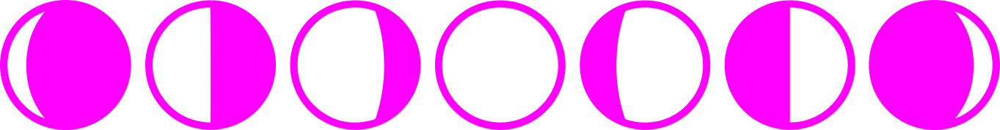
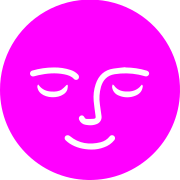

contragence
spatiale
vous souhaite de beaux rêves
vous souhaite de beaux rêves

La Contragence Spatiale est une maison de micro-éditions poétiques et subversives, née pour protéger les astres, dérouter les satellites et résister à l’instrumentalisation du cosmos. Elle recueille les messages des humains non capitaux, soutient les errances sidérales et publie les voix qui parlent depuis les marges de la gravité.
Elle agit contre la conquête, pour la dérive ; contre les missions, pour les fuites ; contre les empires, pour les constellations dissidentes.
Un projet pour les rêveureuses insurgé·es, les gardien·nes de la lune et les mots qui révolutionnent.

[Ton texte ici : explique la structure, l'agence, le vaisseau...]
[Ton texte ici : présente l'équipe, les fondateurs...]
[Ton texte ici : détails des publications, revues, zines...]
[Ton texte ici : engagements, combats, vision...]
Une idée ? Une envie de collaber ? Un signal à envoyer ?
Email : contact@contragence-spatiale.xyz
Signal / Tel : +41 XX XXX XX XX